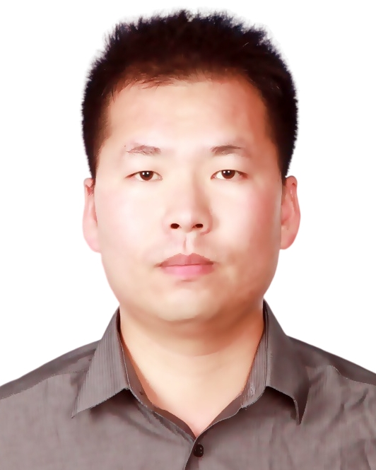

Yuanqiang Zhou (周遠强), Ph.D.
|  |
Research Associate Affiliate

|
About Me
I am currently a Research Associate with the Department of Chemical and Biological Engineering at Hong Kong University of Science and Technology, Hong Kong, working with Prof. Furong Gao.
In 2020, I completed the Ph.D. in control science and engineering at the Department of Automation, Shanghai Jiao Tong University, Shanghai, China, under the supervision of Prof. Dewei Li. From 2017 to 2019, I was a Visiting Scholar with the Department of Electrical and Computer Engineering, New York University, NY, USA, where I worked with Prof. Zhong-Ping Jiang.
Research Interests
Dr. Zhou's research draws on the fields of process control, optimization, data science, and computational intelligence. Optimization-inspired approaches are combined with data processing for uncertain or unknown systems to design and develop control system algorithms with guaranteed performance and stability. His research interests include process control, optimal control, data-driven control, model predictive control, iterative learning control, reinforcement learning, and cyber-physical security, with applications to batch processes and multi-agent systems.
Contact
- Follow me on: ResearchGate, Linkedin, and Facebook.
- E-mail: yqzhou at ust.hk; zhouyuanqiang at alumni.sjtu.edu.cn; zhouyuanq at gmail.com
- Mail: Room 4566 in Academic Building,
Dept. of Chemical and Biological Engineering, HKUST
Clear Water Bay, Kowloon, Hong Kong, China